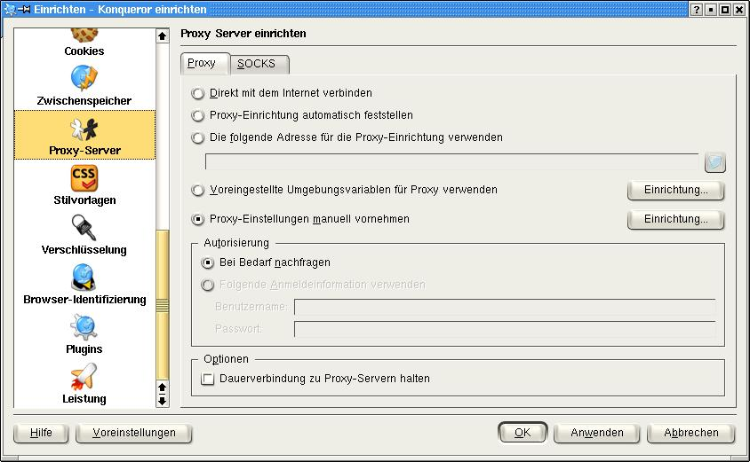

Alternative Browser Inhalt
Alternative Browser Inhalt  Browservorbereitung Alternative Browser Alternative Browser
Browservorbereitung Alternative Browser Alternative Browser Alternative Browser Inhalt
Browservorbereitung Alternative Browser Alternative Browser
JonDos empfiehlt den bereits fertig konfigurierten JonDoFox zum sicheren, anonymen Websurfen. Er ist als vollständiger Browser oder als Firefox-Profil für alle Betriebssysteme verfügbar.
Um JonDo stattdessen im Konqueror einzurichten gehen Sie folgendermaßen vor:
Wählen Sie im Menü Einstellungen das Untermenü Konqueror einrichten.... Danach öffnet sich das Einstellungsfenster. Wählen Sie in diesem den Punkt Proxy-Server:
Wählen Sie nun im Tab Proxy den Punkt Proxy-Einstellungen manuell vornehmen.
Nun muss nur noch der Proxyserver eingestellt werden. Dazu klicken Sie auf den Einrichten Knopf neben Proxy-Einstellungen manuell vornehmen. Dort wird nun bei HTTP die Serveradresse http://127.0.0.1 und der dazu gehörende Port 4001 eingetragen. Danach müssen Sie nur noch Denselben Proxy-Server für sämtliche Protokolle verwenden auswählen um JonDo auch für alle anderen Protokolle nutzen zu können:

Wollen Sie Adressen festlegen, für die JonDo nicht verwendet werden soll, so können Sie im Feld Ausnahmen solche Ausnahmen festlegen, jeweils durch ein normales Komma getrennt.
Hinweis:
Falls Sie im JonDo einen anderen Listenerport
eingestellt haben, müssen Sie diesen anstatt 4001 eintragen.
Alternative Browser Inhalt
Browservorbereitung Alternative Browser Alternative Browser